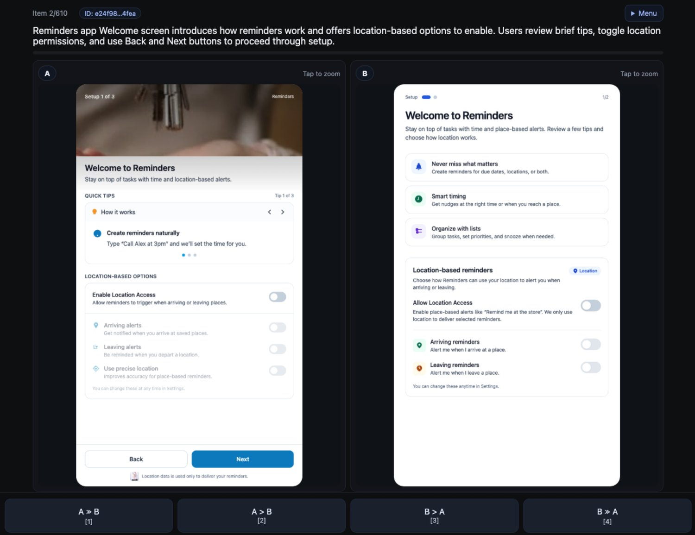
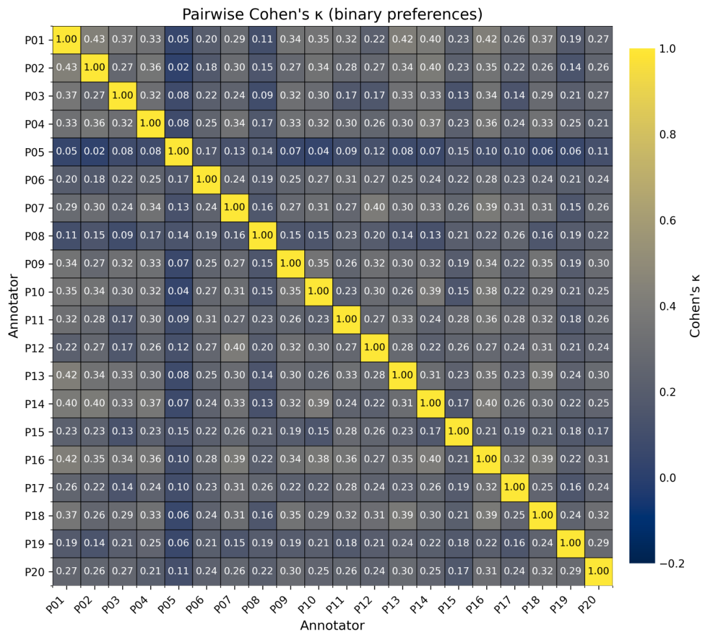
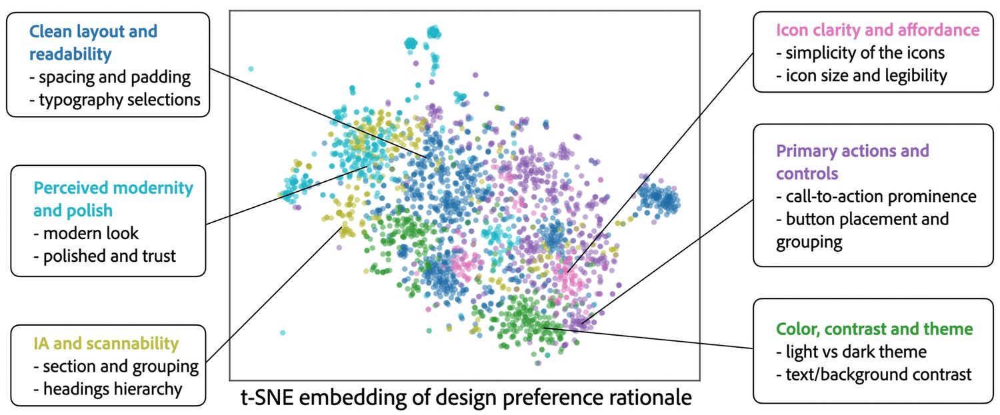
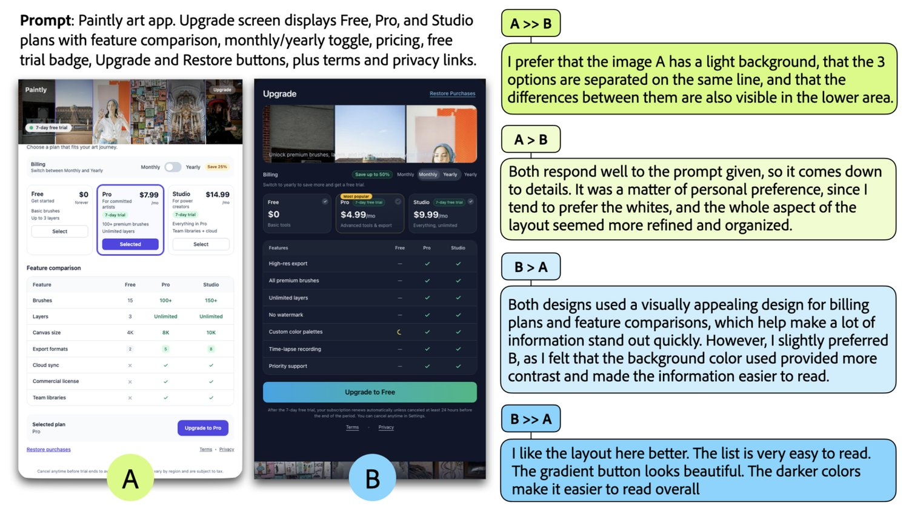
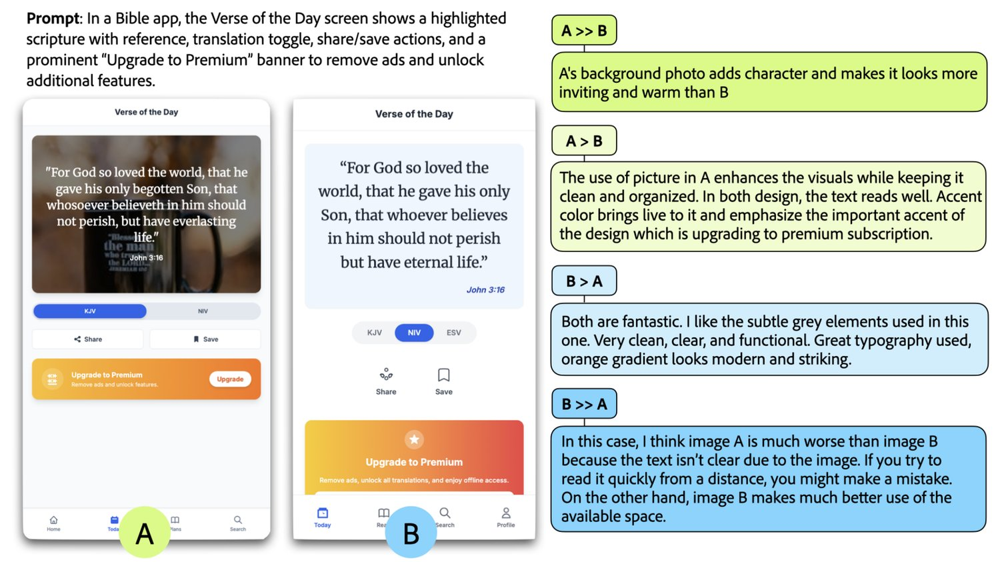

DesignPref: Capturing Personal Preferences in Visual Design Generation
Generative models, such as large language models and text-to-image diffusion models, are increasingly used to create visual designs like user interfaces (UIs) and presentation slides. Finetuning and benchmarking these generative models have often relied on datasets of human-annotated design preferences. Yet, due to the subjective and highly personalized nature of visual design, preference varies widely among individuals. In this paper, we study this problem by introducing DesignPref, a dataset of 12k pairwise comparisons of UI design generation annotated by 20 professional designers with multi-level preference ratings. We found that among trained designers, substantial levels of disagreement exist (Krippendorff’s alpha = 0.25 for binary preferences). Natural language rationales provided by these designers indicate that disagreements stem from differing perceptions of various design aspect importance and individual preferences. With DesignPref, we demonstrate that traditional majority-voting methods for training aggregated “judge” models often do not accurately reflect individual preferences. To address this challenge, we investigate multiple personalization strategies, particularly fine-tuning or incorporating designer-specific annotations into RAG pipelines. Our results show that personalized models consistently outperform aggregated baseline models in predicting individual designers’ preferences, even when using 20 times fewer examples. Our work provides the first dataset to study personalized visual design evaluation and support future research into modeling individual design taste.
“Beauty is no quality in things themselves: It exists merely in the mind which contemplates them; and each mind perceives a different beauty.”— David Hume
「美并非事物本身的性质：它只存在于观照者的心中，而每一颗心所感知到的美各不相同。」——大卫·休谟
Modern generative models can now support visual design tasks across UI layout and presentation slides composition. Design quality matters at scale: a classic survey reports that about half of an application’s code and a similar share of development time focus on the user interface [33]. With advances in large language, vision-language and multimodal models (LLMs/VLMs/LMMs), recent work begins to assess visual design quality automatically. Across designs, methods pair compiler or runtime diagnostics with text–image alignment to estimate intent match [60], train scorers that judge design screenshots against written goals and align with professional judgments [59, 66], and add region‑level critiques for design to turn scores into design suggestion [10]. These works suggest that model‑based evaluation can potentially guide design workflows at scale.
现代生成模型已经能够支持 UI 版面与演示文稿排版等视觉设计任务。设计质量在规模化场景下至关重要：一项经典调查指出，应用程序约一半的代码与相近比例的开发时间都投入在用户界面上 [33]。随着大语言模型、视觉—语言模型与多模态模型（LLM/VLM/LMM）的发展，近期工作开始自动评估视觉设计质量。相关方法有的把编译器或运行时诊断与图文对齐结合起来估计意图匹配度 [60]，有的训练打分器依据书面目标评判设计截图并与专业判断对齐 [59, 66]，还有的引入区域级点评，把分数转化为设计建议 [10]。这些工作表明，基于模型的评估有望在大规模上指导设计工作流。
Despite rapid progress, off‑the‑shelf evaluators do not yet deliver accurate personalized assessment of visual design. Most preference data is collected for the purpose of aggregation in benchmark [67, 28] or training settings such as RLHF and DPO [35, 44]. Yet, previous work has shown that visual preference can vary widely among individuals and be poorly approximated by globally aggregated data [23, 25, 15]. This is especially true for UI design, which has been shown to vary based on aesthetic taste, user needs [58, 41], cultural background [47], and design trends [14, 61, 27]. Prior work has attempted to apply rubric-guided ratings and rankings to collect designer feedback [10, 30] but found that subjectivity within the guidelines and differing preferences among designers led to a noisy learning signal for model training [10, 59].
尽管进展迅速，现成的评估器仍无法对视觉设计做出准确的个性化评估。多数偏好数据是为基准 [67, 28] 或 RLHF、DPO [35, 44] 等训练场景中的聚合目的而收集的。然而先前研究表明，视觉偏好在个体之间差异很大，难以由全局聚合数据很好地逼近 [23, 25, 15]。UI 设计尤其如此——已有研究表明它会随审美品味、用户需求 [58, 41]、文化背景 [47] 与设计潮流 [14, 61, 27] 而变化。先前工作尝试用评分细则引导的打分与排序来收集设计师反馈 [10, 30]，却发现细则内部的主观性与设计师之间的偏好差异会给模型训练带来噪声很大的学习信号 [10, 59]。
To better support visual design personalization, we introduce DesignPref, a dataset of 12,000 pairwise comparisons over generative UI designs, each with binary and four-class preference ratings from one of 20 professional graphic designers. Analysis reveals substantial disagreement across trained designers (Krippendorff’s alpha = 0.25 for binary preferences). 28.5% of comparisons have 96% or more pair-wise disagreement rate. We further collect the rationale on top of pairs that raise highly divergent preferences. Our results show that designers can have different preferences on color contrast (dark or bright), how dense the screen should be (detailed vs simple), or how strongly hierarchy is marked. To show the utility of individual design preference data in improving model performance, we conduct several experiments. We show that finetuning an existing design assessment model [59] on a designer’s individual labels leads to better preference prediction accuracy and rating correlation than the same model trained on a 20 times larger aggregated dataset. We conduct a similar experiment with an existing RAG-based UI assessment system [10] and show similar improvements when retrieving from a smaller, personalized pool of examples.
为更好地支持视觉设计个性化，我们提出 DesignPref——一个包含 12,000 组针对生成式 UI 设计的成对比较的数据集，每组都由 20 位专业平面设计师之一给出二分类与四分类偏好评级。分析显示，受过训练的设计师之间存在显著分歧（二分类偏好的 Krippendorff's alpha = 0.25），28.5% 的比较其成对分歧率达到 96% 以上。我们还针对引发高度分歧的成对样本额外收集了理由阐述。结果表明，设计师在色彩对比（偏暗或偏亮）、屏幕应当多密集（细腻还是简洁）以及层次标注得多强等方面可能持有不同偏好。为展示个体设计偏好数据在提升模型性能上的作用，我们开展了若干实验。我们表明，在某位设计师的个体标注上微调一个现有的设计评估模型 [59]，其偏好预测准确率与评级相关性都优于在规模大 20 倍的聚合数据集上训练的同一模型。我们在现有的基于 RAG 的 UI 评估系统 [10] 上做了类似实验，结果显示：当从一个更小、个性化的示例池中检索时，也能获得相近的改进。
In summary, our work makes three contributions towards personalizing design assessment. First, we introduce DesignPref, a benchmark of 12k identity‑linked, designer‑authored pairwise comparisons with rationales that supports research on personalized evaluation of visual UI design. Second, we conduct an analysis of this dataset where we quantify the prevalence of inter-rater disagreements and perform a coding-based analysis of designers’ rationales to better understand the reasons behind divergence. Finally, we conduct a series of modeling experiments that demonstrate a smaller amount of personalized data leads to better preference prediction than a 20 times larger aggregated dataset in a finetuning and RAG setting.
总而言之，我们的工作在推动设计评估个性化方面有三项贡献。第一，我们提出 DesignPref——一个包含 1.2 万组身份关联、由设计师本人完成的成对比较及理由阐述的基准，支持对 UI 视觉设计的个性化评估研究。第二，我们对这一数据集展开分析，量化了评分者间分歧的普遍程度，并对设计师的理由做了基于编码的分析，以更好地理解分歧背后的原因。第三，我们开展了一系列建模实验，证明在微调与 RAG 两种设定下，用量少得多的个性化数据比规模大 20 倍的聚合数据集能带来更好的偏好预测。
To contextualize our work, we review previous research on automated UI design assessment, visual model-as-a-judge systems, and personalized image assessment.
为定位本文工作，我们回顾了自动化 UI 设计评估、视觉「模型即评判者」系统以及个性化图像评估方面的已有研究。
Recent advances in LLMs/LMMs make automatic UI design assessment feasible. Early work prompts GPT‑4 with written heuristics; expert designers report helpful suggestions yet low stability across revisions [11]. Followed with that, researchers released UICrit, which is a dataset contains expert critiques with region boxes and quality ratings and showed that few‑shot and visual prompts raise LLM feedback quality [10]. Recent benchmark treated LMM as unified UI judges and found only moderate alignment with human preferences across absolute and pairwise evaluations [59, 29]. To make design quality modeling effective, recent UI design autorater adopts UI- and quality-aware signals instead of generic vision-language objectives. UIClip introduced a design quality-oriented encoder that scores prompt relevance and design quality and matched professional designer preferences better than off-the-shelf LMM-as-a-judge while also producing design suggestions [59]. All these prior efforts focus on optimizing aggregated, universal visual design judges. Our work instead focuses on modeling personal judgment, where we retain rater identity and a four‑level intensity scale to make models better predict each designer’s choices.
LLM/LMM 的近期进展使 UI 设计的自动评估变得可行。早期工作用书面启发式规则提示 GPT-4；专家设计师认为建议有用，但跨版本修改的稳定性偏低 [11]。此后，研究者发布了 UICrit——一个包含带区域框的专家点评与质量评分的数据集——并表明少样本提示与视觉提示能提升 LLM 反馈的质量 [10]。近期的基准把 LMM 当作统一的 UI 评判者，发现无论是在绝对值评估还是成对评估上，与人类偏好的一致性都只是中等 [59, 29]。为使设计质量建模真正有效，近期的 UI 设计自动评分器转而采用 UI 感知与质量感知的信号，而非通用的视觉—语言目标。UIClip 引入了一个面向设计质量的编码器，对提示相关性与设计质量打分，比现成的 LMM-as-a-judge 更契合专业设计师的偏好，同时还能产出设计建议 [59]。这些已有工作都聚焦于优化聚合式、通用的视觉设计评判者；我们的工作则聚焦于对个体判断建模——保留评分者身份与四级强度刻度，使模型能更好地预测每一位设计师的选择。
Work on visual generation often relies on model judges that capture population preferences and then steer and improve generators with those rewards. Two lines of progress set the stage. First, automatic evaluators replace generic proxies with task-aware checks: TIFA asks a VQA system questions about the prompt to measure faithfulness and shows stronger agreement with humans than CLIP-style metrics [18]. Second, preference-trained reward models turn large-scale human choices into scalar scores: ImageReward, Pick-a-Pic, and HPSv2/v3 are examples of models trained using expert pairwise comparisons and votes [62, 23, 31]. These types of automated judges can enable preference optimization for generative models [52, 20] without hand‑crafted rewards. Most of these works aim to learn a single global utility and collapse diverse tastes into an average score. DesignPref complements this setting by keeping rater identity and a four-level confidence label on each comparison, so a judge can learn whose preference to predict and at what strength. This personalized view matters for design-centric visuals where trained professionals still disagree at a high rate, and where downstream tuning can potentially benefit from identity-aware targets.
视觉生成领域的工作常常依赖模型评判者来捕捉群体偏好，再用这些奖励去引导与改进生成器。两条进展脉络奠定了基础。其一是自动评估器用任务感知的检查取代通用代理指标：TIFA 让 VQA 系统针对提示提问以衡量保真度，并显示出比 CLIP 类指标更强的人类一致性 [18]。其二是偏好训练的奖励模型把大规模人类选择转换为标量分数：ImageReward、Pick-a-Pic 与 HPSv2/v3 都是基于专家成对比较与投票训练的模型 [62, 23, 31]。这类自动评判者无需手工设计奖励，就能支持生成模型的偏好优化 [52, 20]。这些工作大多旨在学习一个单一的全局效用函数，把多样的品味压缩成一个平均分。DesignPref 则对此形成补充：它保留评分者身份，并为每次比较附上四级置信标签，使评判者能够学习去预测「谁的偏好」以及「强度如何」。在以设计为核心的视觉内容上，这种个性化视角尤为重要——受过训练的专业人士在那里仍存在很高的分歧率，而下游的微调也可能从身份感知的目标中获益。
Personalized visual preference research models user‑specific taste instead of a population mean. The field first framed personalized aesthetics as a supervised problem with rater identity: Ren et al. introduced a task with AMT rater IDs and owner‑rated albums and showed that content and attribute cues predict user‑level deviations from a generic scorer [48]. PARA broadened scale and subject coverage and added rich user attributes, which enables identity‑conditioned prediction [64]. Personalized image quality assessment (IQA) work has also trained models for specific age groups and individuals [57, 5] to improve traditional metrics such as NIMA, MUSIQ, and CLIP-IQA [50, 21, 55] In our paper, we seek to extend this research to UI design assessment, where individual preferences could be influenced by a range of factors such as aesthetic taste, accessibility needs [58, 40, 36], cultural background [47], and evolving design trends [14, 27]. To this end, we contribute a dataset of identify-linked designer preferences and reasoning which we show can personalize VLMs through fine-tuning and retrieval-augmented generation (RAG) approaches.
个性化视觉偏好研究建模的是用户特有的品味，而非群体均值。该领域最初把个性化美学形式化为一个带评分者身份的监督问题：Ren 等人提出了一个带 AMT 评分者 ID 与所有者自评相册的任务，表明内容与属性线索可以预测用户相对通用打分器的偏差 [48]。PARA 扩大了规模与主题覆盖，并加入丰富的用户属性，从而支持身份条件下的预测 [64]。个性化图像质量评估（IQA）工作也针对特定年龄段与个体训练了模型 [57, 5]，以改进 NIMA、MUSIQ、CLIP-IQA 等传统指标 [50, 21, 55]。本文则试图把这一研究拓展到 UI 设计评估——其中的个体偏好可能受审美品味、无障碍需求 [58, 40, 36]、文化背景 [47] 与不断演变的设计潮流 [14, 27] 等一系列因素影响。为此，我们贡献了一个身份关联的设计师偏好与推理数据集，并证明它能通过微调与检索增强生成（RAG）两种方式实现 VLM 的个性化。

图 1：我们的标注界面包含一段定义设计任务的提示。由该提示生成的两个变体并排呈现，评分者从中选择四个偏好选项之一。
Our work aims to understand and model how individual design preferences arise for UIs. We introduce DesignPref, a dataset that captures personalized preferences for generative visual design. We focus on the domain of mobile UI, where A/B testing and comparisons are standard practice [22, 7].
我们的工作旨在理解并建模个体对 UI 的设计偏好如何产生。为此我们提出 DesignPref，一个捕捉生成式视觉设计中个性化偏好的数据集。我们聚焦移动端 UI 这一领域，在其中 A/B 测试与比较是标准做法 [22, 7]。
Existing UI datasets do not include annotations for preference personalization, yet they provide screenshots, text descriptions, and other metadata that we reuse to build controlled pairs and collect judgments from individual designers [53, 2, 59, 10]. The resulting dataset, methods, and findings can be potentially extended to other graphic design domains such as presentation slides [12, 37, 66, 42] and posters [16, 17]. We choose GPT-5 and Gemini-2.5-Pro, two strong-performing language models from WebDev Arena [28], as base generators. Each model produces executable UI code (HTML, CSS, and JavaScript) to render mobile screens. Our study measures how people judge visual design quality and how those judgments vary across individuals, capturing shared criteria as well as personal taste.
现有的 UI 数据集不含面向偏好个性化的标注，但它们提供了截图、文本描述与其他元数据，我们复用这些材料构建受控的成对样本，并从每位设计师那里收集判断 [53, 2, 59, 10]。所得数据集、方法与发现有可能拓展到其他平面设计领域，例如演示文稿 [12, 37, 66, 42] 与海报 [16, 17]。我们选择 GPT-5 与 Gemini-2.5-Pro——WebDev Arena [28] 上表现优异的两个语言模型——作为基础生成器。每个模型产出的可执行 UI 代码（HTML、CSS 与 JavaScript）用于渲染移动端屏幕。我们的研究衡量人们如何评判视觉设计质量，以及这些判断在个体之间如何变化，既捕捉共同标准，也记录个人品味。
We sampled 100 human-written screen descriptions from existing dataset [53] and extended them to a more complete screen descriptions using established method [38] as seed prompts. To ensure coverage across UI types, we stratified samples in different categories from prior defined taxonomy [26]. For each description, each model produced four variants with a high temperature to increase diversity. We used similar standard Design Arena [8] prompts to elicit high-quality, renderable UI code and included explicit quality checks in the instructions. In total, our dataset contains 400 generative designs. Each prompt yields 6 within-prompt pairs, which gives 600 unique comparison pairs across all generation.
我们从现有数据集 [53] 中采样了 100 条人工撰写的屏幕描述，并按既有方法 [38] 将其扩展为更完整的屏幕描述，作为种子提示。为保证覆盖不同的 UI 类型，我们依照先前定义的分类体系 [26] 分层采样。对每条描述，每个模型在高温设置下生成四个变体以增加多样性。我们使用了与 Design Arena [8] 类似的标准化提示，以诱导高质量、可渲染的 UI 代码，并在指令中加入明确的质量检查。我们的数据集共计包含 400 个生成式设计；每条提示产生 6 个提示内配对，因此在全部生成结果中共得到 600 个唯一的比较对。
We recruited 20 designers via a university mailing list and online platforms. Each designer who participated in our study had at least one year of professional UI design experience. We designed our data annotation task to take approximately 90 minutes to complete. Designers who participated in our study were compensated $15.55 an hour, and our data collection protocol was approved by our institution’s IRB.
我们通过大学邮件列表与在线平台招募了 20 位设计师，参与研究的每位设计师都至少有一年的专业 UI 设计经验。我们把数据标注任务设计为大约 90 分钟可完成。参与研究的设计师按每小时 15.55 美元获得报酬，数据采集协议经所在机构的 IRB 批准。
Each designer viewed a pair of UI screens in each trial. The rater chose both direction and strength of preference on a four‑point Likert‑scale (Fig. 1): “A much better than B” (AB), “A better than B” (AB), “B better than A” (BA) or “B much better than A” (BA). We chose an even-numbered scale (i.e., no neutral option) to encourage raters to express even subtle preferences. The protocol follows recent works that use fine‑grained preference options for model alignment and evaluation [51, 49, 54]. We linked every label to a persistent rater identifier to support per‑rater models and personalization analyses, consistent with work that estimates judge‑specific reliability in crowdsourcing settings [4, 3, 6, 45].
在每次试验中，每位设计师观看一对 UI 屏幕 。评分者在四点李克特量表上同时选择偏好的方向与强度（图 1）：「A 远好于 B」（AB）、「A 好于 B」（AB）、「B 好于 A」（BA）或「B 远好于 A」（BA）。我们选择偶数级量表（即不设中性选项），以鼓励评分者表达哪怕很细微的偏好。该协议遵循近期为模型对齐与评估采用细粒度偏好选项的工作 [51, 49, 54]。我们把每个标签都关联到一个持久的评分者标识，以支持针对单个评分者的建模与个性化分析，这与在众包场景中估计评判者特定信度的工作一致 [4, 3, 6, 45]。
Each designer rated 600 UI pairs under two label granularities: a binary direction label that records which variant wins, and a four-way label that encodes preference strength. Group-level reliability remains modest in both schemes. For binary preferences, the mean pairwise agreement is , and both mean Cohen’s and multi-rater Krippendorff’s equal . For the four-way labels, the corresponding values drop to for agreement, for , and for . These values confirm substantial disagreement among trained designers and align with prior designer studies [59, 10]. Direction and four-way correlate at , so designer pairs who agree on winners also tend to agree on strength, although strength judgments add additional noise.
每位设计师在两种标签粒度下对 600 组 UI 配对进行评分：记录哪个变体胜出的二分类方向标签，以及编码偏好强度的四分类标签。两种方案下的群体级信度都不高。对二分类偏好，平均成对一致率为 ，平均 Cohen's 与多评分者 Krippendorff's 均等于 。对四分类标签，相应数值降至：一致率 ，（对应 ），（对应 ）。这些数值证实了受过训练的设计师之间存在显著分歧，也与先前的设计师研究一致 [59, 10]。方向与四分类 的相关性为 ，因此在胜出者上达成一致的设计师配对，其强度判断也趋于一致，不过强度判断会引入额外噪声。

图 2：设计师之间在成对二分类偏好上的 Cohen's kappa 一致性。
Label-use patterns help explain the reliability gap between direction and four-way evaluation. Class frequencies for the four-way choices are AB , BA , AB , and BA . When aggregated by strength, of judgments use the middle options (AB or BA), and use the extreme options (AB or BA). Usage varies markedly across designers: the middle-option share has mean with values from to , and the extreme-option share has mean with values from to . The distribution suggests frequent reliance on slight preferences and highly heterogeneous thresholds for strong claims.
标签使用模式有助于解释方向评估与四分类评估之间的信度差距。四分类选项的类别频率为：AB 、BA 、AB 、BA 。按强度聚合后， 的判断使用中间选项（AB 或 BA）， 使用极端选项（AB 或 BA）。使用情况在设计师之间差异显著：中间选项占比的均值为 ，取值范围从 到 ；极端选项占比的均值为 ，取值范围从 到 。该分布表明，评分者常常依赖轻微偏好，并且对「强」判断的阈值高度不一致。
We hypothesized that the type of UI screen may have contributed to designers’ preference distribution, as some screens (e.g., social media feeds) may surface more variations than others (e.g., login screens). To analyze the agreement level on different UI screen types, we group items by screen types defined by prior taxonomy [26] and measure direction consensus with the per-item mean pairwise agreement and the entropy of binary votes, then average within each type. Form screens show the strongest consensus, with mean pairwise agreement of 72.11% and the highest share of extreme choices 32.71%. List, Dialer, and Search screens follow with agreement around 66%–68%. Designers disagree most on Terms pages, Camera interfaces, Media Player screens, and Login flows, all of which stay near 54%–57% agreement. Across the 20 types, mean agreement and the share of extreme judgments correlate strongly (), so screen types that yield clearer winners also elicit stronger preference consensus. Overall, structured layouts with clear primary actions (e.g., forms, search pages) support more unified and decisive preferences, whereas visually complex or multifunctional screens lead to more diffuse judgments.
我们假设 UI 屏幕类型可能影响了设计师的偏好分布，因为某些屏幕（如社交媒体信息流）可能比其他屏幕（如登录页）呈现更多变化。为分析不同 UI 屏幕类型上的一致程度，我们按先前分类体系 [26] 定义的屏幕类型对条目分组，并用逐条目的平均成对一致率与二分类投票的熵来衡量方向共识，再在每种类型内取平均。表单类屏幕的共识最强，平均成对一致率为 72.11%，极端选择占比也最高，为 32.71%。列表、拨号与搜索类屏幕紧随其后，一致率约在 66%–68%。设计师在条款页、相机界面、媒体播放器屏幕与登录流程上分歧最大，一致率都停留在 54%–57% 附近。在 20 种类型中，平均一致率与极端判断占比强相关（），因此能产生更明确胜出者的屏幕类型，也会引发更强的偏好共识。总体而言，主操作清晰的结构化版面（如表单、搜索页）支持更统一、更果断的偏好，而视觉复杂或多功能的屏幕则导致判断更为分散。
We explore how designers explain their preferences with a rationale annotation study. We invited the same 20 designers from the preference study; 13 participated. The interface resembled the original one but added a text box under each selected pair. For each chosen comparison, designers saw their earlier choice and wrote a brief rationale. To understand disagreements, we sampled highly contested pairs with majority margin , which corresponds to splits of 55% versus 45% or closer. This process yielded 106 design pairs. Across these pairs, designers wrote 1,378 rationales, with about 3 hours of work per participant (we paid $15.55 per hour).
我们通过一项理由标注研究，探索设计师如何解释自己的偏好。我们邀请了偏好研究中的同批 20 位设计师，其中 13 位参与。界面与原界面相似，但在每个被选中的配对下方增加了一个文本框。对每个被选中的比较，设计师会看到自己先前的选择，并写下简短的理由。为理解分歧，我们采样了多数边距 的高度争议配对，这对应于 55% 对 45% 或更接近的分歧。该过程得到 106 组设计配对。在这些配对上，设计师共写下 1,378 条理由，每位参与者约投入 3 小时（我们按每小时 15.55 美元支付报酬）。

图 3：偏好理由主题的嵌入聚类。

(a) 在升级屏幕上，设计师的分歧主要集中在对浅色与深色主题以及对比度的偏好上。

(b) 在圣经应用屏幕上，设计师在装饰性图像与更偏实用导向的版面之间产生分歧。
图 4：分歧偏好背后的理由。每组展示一个一半设计师选 A、一半选 B 的例子。
We characterize common patterns in the rationales with a two-stage, embedding-based clustering pipeline that follows recent work on automatic and human-centered thematic analysis [43, 56, 1, 39]. We split each rationale into sentences and treat each sentence as a basic reasoning unit. A transformer-based sentence encoder maps each unit into a high-dimensional vector space [46]. We cluster these vectors into fine-grained groups and ask GPT-5 to assign each group a neutral label, short summary, and key concerns. A second GPT-5 pass merges related groups into broader themes. Our analysis of 1,378 written rationales surfaces six recurrent themes (Figure 3), listed in order of how often designers mention them: clean layout and readability, primary actions and controls, perceived modernity and polish, color, contrast, and theme, information architecture (IA) and scannability, and icon clarity and affordance. Clean layout and readability covers comments about generous spacing, clear alignment, and larger type. Primary actions and controls reflects a preference for obvious, reachable call-to-actions that stand apart from secondary options. When screens already satisfy basic readability, perceived modernity and polish often decides between functionally similar variants. Designers often favored crisper typography, smoother spacing, and cohesive accent colors and describe the preferred screen as more “modern” or “professional”. Color, contrast, and theme focuses on background tone and palette cohesion, where contrast helps key controls stand out. Information architecture and scannability emphasizes clear sections and hierarchy, such as plan comparison screens with card-based layouts. Icon clarity and affordance captures choices on dialer and camera screens, where fewer, larger icons with higher contrast and short labels make each control easier to interpret.
我们用一个两阶段、基于嵌入的聚类流程刻画理由中的常见模式，该流程遵循近期关于自动化与以人为中心的主题分析的工作 [43, 56, 1, 39]。我们把每条理由拆成句子，并把每个句子作为一个基本推理单元；一个基于 transformer 的句子编码器把每个单元映射到高维向量空间 [46]。我们把这些向量聚类为细粒度分组，并让 GPT-5 为每个分组指定一个中性标签、简短摘要与关键关注点；再由 GPT-5 进行第二轮处理，把相关分组合并为更宽泛的主题。对 1,378 条书面理由的分析呈现出六个反复出现的主题（图 3），按被提及频率排序为：整洁的版面与可读性；主操作与控件；观感上的现代感与精致度；颜色、对比与主题；信息架构（IA）与可扫读性；图标清晰度与可供性（affordance）。整洁的版面与可读性涵盖对留白充足、对齐清晰与字号更大的评论。主操作与控件反映出对醒目易达、能与次要选项区分开的行动召唤元素的偏好。当屏幕已满足基本可读性时，观感上的现代感与精致度常常成为功能相近变体之间的决定因素。设计师往往更青睐更明晰的字体排印、更顺滑的间距与协调的强调色，并把所选屏幕描述为更「现代」或更「专业」。颜色、对比与主题关注背景色调与调色板的一致性，其中对比度有助于让关键控件凸显出来。信息架构与可扫读性强调分区清晰与层次分明，例如采用卡片式版面的套餐比较页。图标清晰度与可供性捕捉了在拨号与相机屏幕上的选择——更少、更大、对比更高且带简短标签的图标，会让每个控件更易理解。
While the previous analysis surfaces what designers generally agree on, contested pairs reveal structured disagreement in how designers weigh the same concerns. We focus on the selected contested pairs and treat each pair as a unit of analysis. For each pair, we give GPT-5 the full set of rationales from designers on each side. The model describes the main design trade-off in that pair and the main reasons respondents favor each version. A second GPT-5 pass groups related trade-offs into broader divergent themes. The analysis highlights four recurrent themes. The first theme concerns information density. Some designers prefer calm layouts with a short list of options or plans, while others favor denser pricing or support screens that surface more channels or help paths in one view. The second theme concerns visual style and tone. Across login, consent, and fintech screens, some rationales emphasize light, neutral themes that feel legible and trustworthy. Others praise darker or more saturated palettes as more premium, expressive, or more institutional language that signals seriousness (Figure 4(a)). The third theme concerns decorative imagery versus focused utility. On some screens (e.g., media page), one side values large photos, gradients, or illustrations that add warmth and brand expression, while the other side prefers restrained, text-led layouts where icons and controls keep attention on the task or main goal of the app (Figure 4(b)). The fourth theme concerns how strongly the interface foregrounds actions and task scope. Task-first rationales prefer a single high-contrast primary button and minimal chrome, such as camera screens with one clear capture control and little status text. Feature-first rationales endorse richer layouts that expose more modes, filters, alerts, or secondary actions and describe very sparse screens as underpowered.
前述分析揭示了设计师普遍认同什么，而争议配对则揭示了设计师在权衡同一关注点时的结构性分歧。我们以被选中的争议配对为分析单元，对每个配对把两侧设计师的全部理由交给 GPT-5，由模型描述该配对中的主要设计权衡，以及受访者偏好某一版本的主要原因；再由 GPT-5 进行第二轮处理，把相关权衡归并为更宽泛的分歧主题。分析凸显出四个反复出现的主题。第一个主题关乎信息密度：部分设计师偏好选项或套餐较少的平静版面，另一些则青睐更密集的价格页或支持页，让更多渠道或帮助路径在一屏之内呈现。第二个主题关乎视觉风格与基调：在登录、同意与金融科技类屏幕上，一部分理由强调浅色、中性的主题，认为其清晰易读、值得信赖；另一些则称赞更深或更饱和的调色板，认为其更高级、更具表现力，或者用了更制度化的语言来传递严肃感（图 4(a)）。第三个主题关乎装饰性图像与聚焦实用性之间的取舍：在某些屏幕（如媒体页）上，一方看重能增添温度与品牌表达的大图、渐变或插画，另一方则偏好克制的、以文字为主导的版面，让图标与控件把注意力保持在任务或应用的主要目标上（图 4(b)）。第四个主题关乎界面在多大程度上凸显操作与任务范围：任务优先型理由偏好单一的高对比主按钮与极少的界面装饰，例如只有一个清晰拍摄控件、状态文字很少的相机屏幕；功能优先型理由则认可更丰富的版面，以暴露更多模式、滤镜、提醒或次要操作，并把过于稀疏的屏幕形容为功能不足。
In this section, we describe approaches for incorporating DesignPref into machine learning models and pipelines to improve their performance in predicting personalized design preferences. We focused on two example setups that have been used by previous work to assess UI design quality: i) finetuning a CLIP-style dual-encoder VLM [59], and ii) improving a decoder VLM/LMM with a multimodal RAG pipeline [10].
本节描述把 DesignPref 融入机器学习模型与流程、以提升其预测个性化设计偏好性能的方法。我们聚焦于先前工作用于评估 UI 设计质量的两个示例设定：i) 微调一个 CLIP 式双编码器 VLM [59]；ii) 用多模态 RAG 流程改进一个解码器式 VLM/LMM [10]。
We took steps to prepare the DesignPref for our modeling experiments. First, we processed our collected data into a consistent format that could be used for fine-tuning and RAG pipelines.
我们采取了若干步骤，为建模实验准备 DesignPref。首先，我们把采集到的数据处理成可用于微调与 RAG 流程的一致格式。
| (1) |
In the above equation, we construct tuples for every labeled example consisting of the text , image choices and , and the recorded choice mapped to an integer value.
在上述等式中，我们为每个标注样本构造元组，包含文本 、图像选项 与 ，以及映射到整数值的记录选择 。
In addition, we created stratified data splits for our modeling experiments. We chose to use train, validation, and test split proportions to provide a large enough sample size for measuring performance metrics. Our splits were constructed so that all pairs containing the a given screen ID belonged to the same split, preventing data leakage. Across the entire dataset, this resulted in 7200 samples for the training set and 2400 samples for both the validation and test splits. For each designer, this resulted in 360 samples for their training split and 120 samples for the validation and test splits.
此外，我们为建模实验创建了分层的数据划分。我们选择 训练、 验证、 测试的划分比例，以保证有足够大的样本量来衡量性能指标。我们的划分保证包含同一屏幕 ID 的所有配对都落入同一划分，从而避免数据泄露。在整个数据集上，这产生了 7,200 个训练样本，验证集与测试集各 2,400 个样本。对每位设计师而言，其训练划分为 360 个样本，验证与测试划分各 120 个样本。
We show the utility of our preference data in improving a CLIP-style dual-encoder VLM, which has previously been used to assess UI design quality and relevance [59, 60]. The CLIP architecture contains two transformer-based encoders and previous work [59, 60] has used it to score UI by computing the cosine similarity between its embedded screenshot and a natural language description of the screen, e.g., “ui screenshot. well-designed. settings page of an e-reader.”
我们展示了偏好数据在改进 CLIP 式双编码器 VLM 上的作用，该架构此前已被用于评估 UI 设计质量与相关性 [59, 60]。CLIP 架构包含两个基于 transformer 的编码器，先前工作 [59, 60] 用它为 UI 打分：计算截图嵌入与屏幕自然语言描述之间的余弦相似度，例如「UI 截图。设计良好。电子阅读器的设置页。」
Previous work [59] found that the original CLIP model does not perform well on UI design assessment, and the authors finetuned a derivative model, called UIClip, on a large dataset of webpages screenshots with varying levels of synthetically-induced design flaws to better calibrate the predicted score [59]. In our experiments, we used UIClip’s released model and inference code as a starting point. Specifically, because we wanted to isolate the effect of our collected dataset, we chose to use UIClip’s pretraining checkpoint11 1 https://huggingface.co/biglab/uiclip_jitteredwebsites-2-224-paraphrased, which was not fine-tuned on the authors’ previously collected human preferences. Our training approach largely followed the pairwise contrastive learning approach used by UIClip to finetune on preference pairs [59]. However, we incorporate additional granularity from our data and better support model personalization.
先前工作 [59] 发现，原始 CLIP 模型在 UI 设计评估上表现不佳，于是作者在一个包含不同程度人工注入设计缺陷的网页截图大数据集上微调了一个衍生模型 UIClip，以更好地校准预测分数 [59]。在我们的实验中，我们以 UIClip 发布的模型与推理代码为起点。具体地，由于我们希望隔离出我们所采集数据集的作用，我们选择使用 UIClip 的预训练检查点11 1 https://huggingface.co/biglab/uiclip_jitteredwebsites-2-224-paraphrased，该检查点未在作者先前采集的人类偏好上做过微调。我们的训练方法大体沿用了 UIClip 在偏好对上微调所用的成对对比学习方案 [59]，但引入了数据中额外的粒度信息，并更好地支持模型个性化。
First, we altered the originally proposed pairwise contrastive loss to a formulation with a cost-sensitive margin [19], which allowed us to incorporate the strength of designers’ preferences. We used the following loss function for finetuning UIClip on preference examples from our dataset.
首先，我们把原提出的成对对比损失改为带代价敏感间隔（margin）[19] 的形式，从而能够纳入设计师偏好的强度。我们在数据集的偏好样本上微调 UIClip 时使用了如下损失函数。
| (2) | ||||
In the above equation, is the margin used for loss computation, which depends on the ground truth label. and represent the model’s predicted scores for a preferred sample and rejected sample , respectively.
在上述等式中， 是用于损失计算的间隔，它取决于真值标签。 与 分别表示模型对偏好样本 与拒绝样本 的预测分数。
During model inference, the difference between predicted screens’ scores is used to make a four-way classification prediction.
模型推理时，用预测屏幕分数之间的差值做出四分类预测。
| (3) |
Negating these values leads to the thresholds for the opposite preference (e.g., B is better than A).
对这些取值取负即可得到相反偏好（例如 B 优于 A）的阈值。
In addition to using a strength-aware margin, we trained separate models on their preference pairs to better reflect their individual preferences. Due to the limited amount of training data from each participant (360 examples), we found that only unfreezing the last layer of UIClip during training reduced the risk of overfitting and led to better performance in our early experiments. We also introduced other regularization measures, such as weight decay to further combat overfitting. All designers’ models were trained using the same set of hyperparameters and early stopping schedule. This set of hyperparameters was initialized from previously published values [59] and further refined through manual experimentation. Hyperparameter values can be found in the supplemental material.
除了使用强度感知间隔，我们还在各自的偏好对上分别训练独立模型，以更好地反映个体偏好。由于每位参与者提供的训练数据有限（360 个样本），我们发现训练时只解冻 UIClip 的最后一层可以降低过拟合风险，并在早期实验中带来更好的性能。我们还引入了其他正则化措施，例如权重衰减，以进一步对抗过拟合。所有设计师的模型都使用同一组超参数与早停策略训练；这组超参数以先前发表的取值 [59] 为起点，再通过人工实验进一步调优。超参数取值见补充材料。
Prior work reports that decoder-style LMMs perform poorly on zero-shot UI design assessment tasks [59, 11, 10, 9]. We hypothesized that retrieval-augmented generation (RAG) with our dataset could improve performance. Rather than relying only on knowledge stored in model weights, our RAG setup retrieves a small set of labeled designer preference examples as few-shot context for each query. We build this retrieval pipeline on the design critique generation framework from UICrit [10], and we adapt the prompt to predict pairwise design preferences instead of natural language comments.
先前工作报告指出，解码器式 LMM 在零样本 UI 设计评估任务上表现不佳 [59, 11, 10, 9]。我们假设，用我们的数据集做检索增强生成（RAG）可以提升性能。我们的 RAG 设定不再只依赖模型权重中存储的知识，而是为每个查询检索一小批带标签的设计师偏好样本作为少样本上下文。我们在 UICrit [10] 的设计点评生成框架上构建这条检索流程，并改造提示，使之预测成对的设计偏好，而非生成自然语言评论。
| Model Group | Setup | Preference Acc. (%) | Four-way Acc. (%) | SRCC |
|---|---|---|---|---|
| Personalized models | ||||
| CLIP (UIClip) | Personalized, strength-aware margin | 60.16 | 34.37 | 0.217 |
| Personalized, binary margin | 57.24 | 28.89 | 0.180 | |
| LMM judges, RAG | GPT-5 (8-shot) | 58.89 | 38.53 | 0.211 |
| Gemini-2.5-Pro (8-shot) | 56.53 | 22.35 | 0.170 | |
| Qwen3-VL-235B-Thinking (8-shot) | 56.83 | 42.67 | 0.132 | |
| Qwen3-VL-30B-Thinking (8-shot) | 56.20 | 40.41 | 0.128 | |
| Non-personalized models | ||||
| CLIP (UIClip), pooled | Pooled, strength-aware (personal training size = N) | 56.73 | 32.77 | 0.150 |
| Pooled, strength-aware (full training set = 20N) | 57.45 | 41.23 | 0.196 | |
| LMM judges, pooled RAG | GPT-5 (8-shot) | 57.62 | 34.36 | 0.203 |
| Gemini-2.5-Pro (8-shot) | 56.15 | 22.56 | 0.169 | |
| Qwen3-VL-235B-Thinking (8-shot) | 55.78 | 41.59 | 0.122 | |
| Qwen3-VL-30B-Thinking (8-shot) | 54.78 | 38.79 | 0.110 | |
| Baselines | UIClip (pretrained) | 55.07 | 23.97 | 0.126 |
| OpenAI CLIP B/32 | 46.68 | 23.26 | -0.009 | |
| GPT-5 (zero-shot) | 57.70 | 31.35 | 0.216 | |
| Gemini-2.5-Pro (zero-shot) | 53.65 | 17.76 | 0.135 | |
| Qwen3-VL-235B-Thinking (zero-shot) | 55.36 | 22.09 | 0.131 | |
| Qwen3-VL-30B-Thinking (zero-shot) | 54.82 | 16.17 | 0.117 | |
表 1：个性化与非个性化模型在每位设计师测试划分上的比较。我们报告二分类准确率、四分类准确率，以及预测与真值偏好标签之间的 Spearman 秩相关系数（SRCC）。
We largely followed UICrit’s approach to generating index vectors using textual (screen description) and visual information (UI screenshot). Following UICrit, we used an off-the-shelf text-embedding model, Sentence BERT [46], to generate a fixed-length embedding from the UI’s natural language description. We chose to use UIClip’s visual encoder to generate embeddings for the screenshots, as opposed to the originally used CLIP model [10], since previous work suggested it had stronger UI screenshot retrieval performance [59]. We used these three outputs to generate two index vectors for each preference pair in the training set, by concatenating the text embedding with both potential orderings of the screenshot embeddings. We used two index vectors for each training example because we wanted our retrieval metric to be invariant to the pair order. The retrieval score for a training example was computed as the maximum of the cosine similarity between the query vector and two index vectors.
我们大体沿用 UICrit 的方法，利用文本（屏幕描述）与视觉信息（UI 截图）生成索引向量。与 UICrit 一致，我们使用现成的文本嵌入模型 Sentence BERT [46]，从 UI 的自然语言描述生成定长嵌入。对截图，我们选用 UIClip 的视觉编码器生成嵌入，而非原先使用的 CLIP 模型 [10]，因为先前工作表明它在 UI 截图检索上表现更强 [59]。我们用这三类输出为训练集中的每个偏好对生成两个索引向量：把文本嵌入分别与两种可能的截图嵌入顺序拼接。每个训练样本使用两个索引向量，是因为我们希望检索度量对配对顺序不变。训练样本的检索分数取查询向量与两个索引向量之间余弦相似度的最大值。
During inference, a retrieval score was computed for each example in training set and the results from the top were injected into the input prompt. The prompt format can be found in the supplemental materials of this paper. When running RAG with a single designer’s labeled data, this process resulted in exactly retrieved samples, since each designer was only asked to label a pair once. However, when running RAG on the entire dataset of designers’ data, samples are returned, since each designer labeled the exact same pairs, which result in the same retrieval scores. In this case, we aggregate designers’ labels by averaging all their assigned scores into a single number then rounding to the nearest integer. If the final score rounded to 0, then we randomly chose between A B and A B for the few-shot example.
推理时，我们为训练集中的每个样本计算检索分数，并把排名前 的结果注入输入提示。提示格式见本文补充材料。当用单个设计师的标注数据运行 RAG 时，该过程恰好得到 个检索样本，因为每位设计师对每个配对只需标注一次。然而，当在 位设计师的全量数据上运行 RAG 时，会返回 个样本，因为每位设计师标注的配对完全相同，检索分数也就相同。在这种情况下，我们通过对所有设计师给出的分数取平均再四舍五入到最接近的整数来聚合标签。若最终分数四舍五入为 0，则在 A B 与 A B 之间随机选取，作为少样本示例。
To demonstrate the utility of our dataset in improving ML-based UI design assessment, we conducted experiments that compared data and model configurations with access to personalized data.
为展示我们的数据集在改进基于机器学习的 UI 设计评估上的作用，我们开展了实验，比较可以访问个性化数据的不同数据与模型配置。
We tested several configurations and baselines to measure the effect of our data on CLIP finetuning and RAG. For our CLIP finetuning experiments, we compared the following conditions:
我们测试了若干配置与基线，以衡量我们的数据对 CLIP 微调与 RAG 的影响。在 CLIP 微调实验中，我们比较以下条件：
Personalized, strength-aware margin. We fine-tuned a separate UIClip model for each designer using our strength-aware margin loss.
1. 个性化 + 强度感知间隔。我们使用强度感知间隔损失，为每位设计师分别微调一个 UIClip 模型。
Personalized, normal margin. We fine-tuned a separate UIClip model for each designer using a standard binary contrastive margin loss.
2. 个性化 + 常规间隔。我们使用标准的二分类对比间隔损失，为每位设计师分别微调一个 UIClip 模型。
Pooled, full training set. We fine-tuned a single UIClip model using the combined training data from all designers.
3. 汇集 + 完整训练集。我们使用所有设计师合并后的训练数据微调单个 UIClip 模型。
Pooled, matched training size. We first combined the training data from all designers then randomly selected 1/20 of the samples, to match the training size of a single designer’s data.
4. 汇集 + 等量训练集。我们先合并所有设计师的训练数据，再随机选取其中 1/20 的样本，以匹配单个设计师数据的训练规模。
We tested our RAG pipeline with four LMMs: GPT-5 [34], Gemini-2.5-Pro [13], Qwen3-VL-235B-Thinking [63], and Qwen3-VL-30B-Thinking. At the time of our experiments, GPT-5 and Gemini-2.5-Pro were the top-performing proprietary VLMs, and Qwen3-VL-235B and Qwen3-VL-30B were the top-performing open source VLMs that could fit on a GPU server and consumer GPU. For each RAG model, we varied the pool of data that the RAG system had access to: i) each designer’s own training set (personalized) and ii) all designers’ labels used our pooled inference strategy (non-personalized). We set our RAG pipeline to retrieve 8 of the most relevant examples, following the best performing configuration found by previous work [10].
我们用四个 LMM 测试了 RAG 流程：GPT-5 [34]、Gemini-2.5-Pro [13]、Qwen3-VL-235B-Thinking [63] 与 Qwen3-VL-30B-Thinking。在实验开展时，GPT-5 与 Gemini-2.5-Pro 是表现最好的闭源 VLM，而 Qwen3-VL-235B 与 Qwen3-VL-30B 是能部署在 GPU 服务器与消费级 GPU 上的最佳开源 VLM。对每个 RAG 模型，我们改变 RAG 系统可访问的数据池：i) 每位设计师自己的训练集（个性化）；ii) 使用我们的汇集式推理策略的全部设计师标签（非个性化）。我们按先前工作 [10] 找到的最佳配置，把 RAG 流程设为检索 8 个最相关的样本。
To measure model performance, we chose three metrics based on those that have previously been used to measure the alignment of automated scoring metrics with human ratings [50]: i) binary accuracy, ii) four-way accuracy, and iii) Spearman rank correlation coefficient (SRCC) on four-way ratings. Metrics were computed individually on each designers’ test split then averaged among 20 designers, i.e., macro-averaging.
为衡量模型性能，我们选取了三项指标，其依据是先前用于衡量自动打分指标与人类评分一致性的指标 [50]：i) 二分类准确率，ii) 四分类准确率，iii) 四分类评分上的 Spearman 秩相关系数（SRCC）。指标先在每位设计师的测试划分上单独计算，再在 20 位设计师之间取平均，即宏平均。
Table 1 shows the overall results. Our analysis focuses on two questions: how designer-specific supervision compares to pretrained or zero-shot judges, and whether personalization helps when compared to global models pool labels across designers.
表 1 给出了总体结果。我们的分析聚焦于两个问题：设计师专属监督与预训练或零样本评判者相比如何；以及在跨设计师汇集标签的全局模型面前，个性化是否确有助益。
Across backbones, designer-specific supervision improves alignment with individual preferences. The per-designer UIClip model with a strength-aware margin reaches 60.16% binary accuracy and 0.217 SRCC, compared to 55.07% and 0.126 for the frozen UIClip encoder and 46.68% and for CLIP B/32. A personalized model that uses a strength-aware loss performs better than the binary variant on all three metrics, suggesting that four-level labels provide useful signal when the loss exposes preference strength.
在各种骨干上，设计师专属监督都提升了与个体偏好的契合度。采用强度感知间隔的按设计师 UIClip 模型达到 60.16% 的二分类准确率与 0.217 的 SRCC，而冻结的 UIClip 编码器为 55.07% 与 0.126，CLIP B/32 为 46.68% 与 。使用强度感知损失的个性化模型在三项指标上都优于二分类变体，说明当损失暴露了偏好强度时，四级标签提供了有用的信号。
Personalized RAG with LMM on each designer’s preference also shows various levels of improvements over zero-shot LMM judges. For GPT-5, personalization raises binary accuracy from 57.70% to 58.89% and four-way accuracy from 31.35% to 38.53% with similar SRCC. Personalization also helps both Qwen models gain about 1–2 points in binary accuracy and more than 20 points in four-way accuracy when retrieval conditions on each designer’s own labels, while SRCC stays roughly unchanged. The two selected metrics show different aspects of the performance: four-way accuracy measures exact matches to discrete preference strengths, reflecting class imbalance and designers’ differing thresholds between slight and strong choices. SRCC instead assesses how consistently model scores preserve overall rankings across the four levels. Given uneven distributions with most labels in the middle, and varied use of extreme ratings among designers, strength predictions remain noisier than binary winner predictions.
在各设计师偏好上做个性化 RAG 的 LMM，相较零样本 LMM 评判者也有不同程度的提升。对 GPT-5，个性化把二分类准确率从 57.70% 提升到 58.89%，四分类准确率从 31.35% 提升到 38.53%，SRCC 基本持平。当检索以每位设计师自己的标签为条件时，个性化也让两个 Qwen 模型的二分类准确率提高约 1–2 个百分点、四分类准确率提高 20 个百分点以上，而 SRCC 大致不变。所选的两项指标刻画了性能的不同侧面：四分类准确率衡量对离散偏好强度的精确匹配，反映了类别不平衡以及设计师在「轻微」与「强烈」之间的不同阈值；SRCC 则衡量模型分数在四个等级上保持整体排序的一致性。由于多数标签集中在中间等级、且各设计师对极端评级的使用差异很大，强度预测仍然比二分类胜出者预测噪声更大。
Per-designer models consistently bring better personalized prediction than global pooling. In UIClip, the per-designer strength-aware model achieves higher binary accuracy and SRCC than pooled four-class models, even when the pooled judge sees roughly twenty times more labels per designer. With a matched training set size, the personalized models improve all three metrics. RAG experiments with LMM show similar pattern but with more marginal improvements. For GPT-5, Qwen-235B-Thinking, and Qwen-30B-Thinking, retrieval over each designer’s own preference labels yields higher binary and four-way accuracy and equal or better SRCC than pooled RAG that averages labels across designers. Gemini-2.5-Pro behaves close to neutral under personalization, which suggests that the base model already encodes a strong consensus prior. Overall, identity-aware personalization helps both finetuned CLIP and few-shot LLM judges align with individual design preferences more closely than global pooling.
按设计师建模在个性化预测上始终优于全局汇集。在 UIClip 上，即便汇集式评判者每位设计师看到的标签量约为其二十倍，按设计师的强度感知模型仍取得更高的二分类准确率与 SRCC；在训练集规模匹配的情况下，个性化模型在三项指标上都有提升。基于 LMM 的 RAG 实验呈现相似模式，但改进幅度更小。对 GPT-5、Qwen-235B-Thinking 与 Qwen-30B-Thinking，在每位设计师自身偏好标签上检索，其二分类与四分类准确率都高于跨设计师平均标签的汇集式 RAG，SRCC 也持平或更优。Gemini-2.5-Pro 在个性化下表现接近中性，说明该基础模型已经编码了很强的共识先验。总体而言，身份感知的个性化能让微调后的 CLIP 与少样本 LLM 评判者都比全局汇集更贴近个体设计偏好。
Although our work suggests that personalization is important for design, we note several limitations and provide avenues for future improvement. First, our dataset is limited to feedback from 20 designers. In contrast to existing crowd-sourced design benchmarks [28, 8], we intentionally chose to focus on skilled (and compensated) designers, who we felt were more likely to understand and accurately apply design guidelines. Yet, a larger sample size might facilitate new types of analyses, such as the emergence of “clusters” of designers who might have similar design tastes, e.g., minimalism or Bauhaus school. Another limitation of our data is that it focused primarily on labeling noise resulting from inter-rater disagreement; although personal uncertainty might be another strong contributing factor. Anecdotally, we observed that designers in our study sometimes changed their own answer during decision process, which further suggests the difficulty of the task for ML models.
尽管我们的工作表明个性化对设计很重要，我们也注意到若干局限，并给出未来改进的方向。第一，我们的数据集只包含 20 位设计师的反馈。与现有的众包设计基准 [28, 8] 不同，我们有意选择聚焦熟练（且获得报酬的）设计师，因为我们认为他们更可能理解并准确应用设计规范。不过，更大的样本量可能催生新型分析，例如涌现出品味相近的设计师「集群」，如极简主义或包豪斯学派。我们数据的另一局限是，它主要关注由评分者间分歧导致的标注噪声，而个体不确定性可能是另一个重要成因。我们在研究中偶然观察到，设计师有时会在决策过程中改变自己的答案，这进一步说明该任务对 ML 模型而言难度很高。
Our modeling experiments explored only a subset of possibilities enabled by DesignPref, and we specifically focused on replicating and improving two existing published examples [59, 10]. Applying personalization approaches led to the best-performing model (60.16% binary accuracy), which is offers a similar level of performance as reward models for challenging tasks such as math and instruction following [24, 32]. Other modeling experiments, e.g., using preference data to finetune a decoder VLM, or using designers’ critiques as reasoning traces are promising next steps for further improving performance, and we expect our dataset to enable additional future exploration.
我们的建模实验只探索了 DesignPref 所支持的一小部分可能性，并且我们专门聚焦于复现并改进两个已发表的示例 [59, 10]。应用个性化方法得到了性能最好的模型（二分类准确率 60.16%），其水平与数学、指令遵循等高难度任务上的奖励模型相当 [24, 32]。其他建模实验——例如用偏好数据微调解码器式 VLM，或把设计师的点评用作推理轨迹——是进一步提升性能的可行下一步，我们也期待本数据集能支持更多未来探索。
Finally, our results show that, in our tested configurations, a smaller amount of personalized data could lead to better preference prediction than a 20 times larger aggregated dataset. However, we did not attempt to study the amount of individually-collected data needed for effective model personalization. Each designer in our study spent approximately 90 minutes to construct their dataset of 600 labels, a lengthy process for most practical applications. A promising future direction is to study the scaling trend of personal preference data or apply related techniques to improve sample efficiency [50, 21, 55, 65].
最后，我们的结果表明，在所测试的配置下，用量更少的个性化数据可以比规模大 20 倍的聚合数据集带来更好的偏好预测。不过，我们并未研究有效的模型个性化究竟需要多少逐个采集的数据。研究中的每位设计师大约花 90 分钟构建自己的 600 条标签，对多数实际应用而言这一过程偏长。一个有前景的未来方向是研究个人偏好数据的规模扩展趋势，或应用相关技术来提升样本效率 [50, 21, 55, 65]。
DesignPref establishes a benchmark for personalized visual design evaluation with identity-linked judgments. The dataset logs 12,000 pairwise UI comparisons from 20 professional designers with four-class strength labels, which enables per-designer modeling. Analyses show low cross-designer consensus and reveal the agreement varies among different designers and evaluated UI types. Per-designer UIClip models beat the best pooled judges on held-out pairs, showing the sample efficiency of personalized data. DesignPref shifts evaluation and alignment from a single global objective toward models that reflect individual taste and lays foundations for personalized design generation.
DesignPref 建立了一个带身份关联判断的个性化视觉设计评估基准。该数据集记录了 20 位专业设计师的 12,000 组成对 UI 比较，并带有四分类强度标签，从而支持按设计师建模。分析表明跨设计师共识度很低，并揭示一致性随设计师与所评估 UI 类型而变。按设计师训练的 UIClip 模型在留出配对上优于最佳的汇集式评判者，体现了个性化数据的样本效率。DesignPref 把评估与对齐从单一全局目标转向反映个体品味的模型，并为个性化设计生成奠定了基础。
Supplementary Material
补充材料
Here are the hyperparameteres we used for training and prompting VLMs:
以下是我们用于训练与提示 VLM 的超参数：
表 2：UIClip 的训练超参数。
| Model | UIClip |
|---|---|
| Learning rate | |
| Schedule | Cosine (, ) |
| Weight decay | |
| Batch size | 64 |
| Gradient clipping | 1.0 |
| Patience | 5 |
| Margin multiplier | 1.1 for “much better” labels |
All the LMM’s parameters for randomness or reasoning are set to default.
所有 LMM 的随机性或推理相关参数均设为默认值。